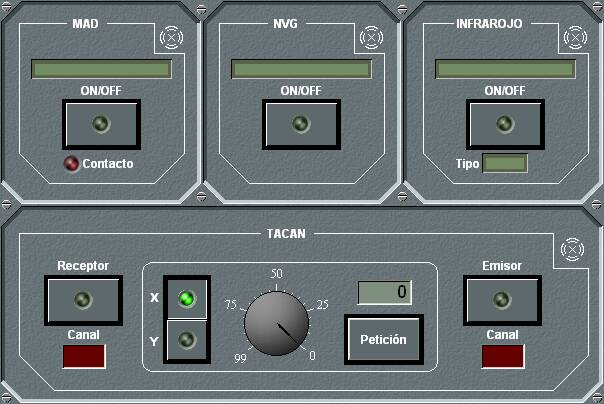

MAD

El panel de detalle del MAD se presenta agrupado con otros sensores, que varían dependiendo del tipo de unidad.
Desde este panel de detalle se puede encender / apagar el MAD y consultar el nombre del equipo. El led rojo se enciende cuando se produce alerta por contacto MAD.
Si el equipo está dañado, no se podrá realizar ninguna operación sobre él.